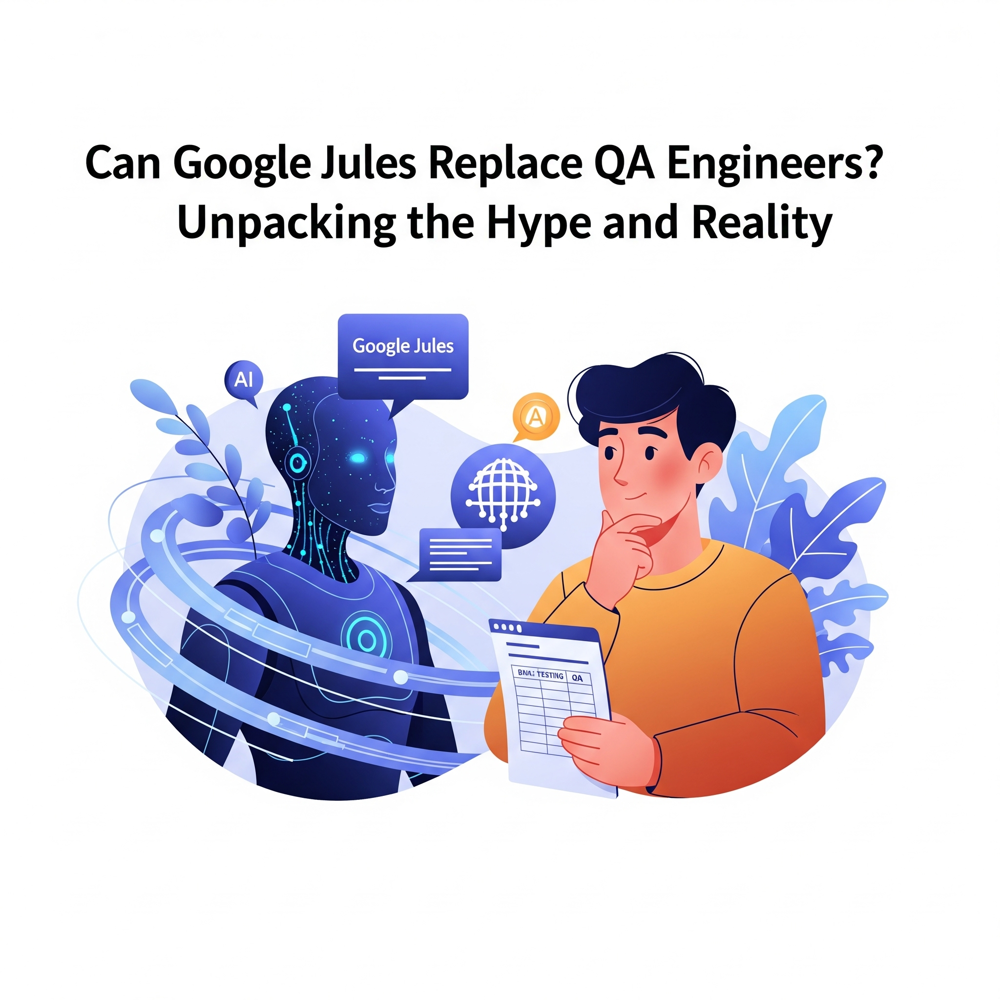

Can Google Jules Replace QA Engineers? Unpacking the Hype and Reality

Key Takeaways
- Google Jules is an AI-powered tool that enhances, not replaces, QA engineers
- While it excels at automation and test generation, it cannot replicate human creativity and domain expertise
- The future of QA lies in human-AI collaboration, not replacement
- QA engineers should focus on developing high-value skills that complement AI tools
The software testing community has been abuzz with discussions about Google Jules, an AI-powered internal tool designed to assist in test planning and generation. Some hail it as a revolutionary breakthrough that could render manual QA engineers obsolete, while others dismiss it as overhyped technology confined to Google's proprietary ecosystem.
So, what's the truth? Is Google Jules a harbinger of job displacement for QA professionals, or is it simply another tool in the ever-evolving toolkit of quality assurance?
In this blog post, we'll cut through the noise to explore what Google Jules is, how it works, and whether it poses a real threat—or opportunity—to the QA profession.
What Is Google Jules?
Google Jules is an internal tool developed by Google to automate parts of the software testing process, specifically in generating and managing test cases. While details remain limited due to its confidential nature, insights shared by Google engineers at conferences and interviews reveal the following:
- AI-Powered Understanding: Jules leverages advanced AI and large language models (LLMs) to interpret product requirements, design documents, and user stories.
- Automated Test Case Generation: It can automatically generate test cases based on static documentation, ensuring consistency and reducing manual effort.
- Context-Aware Assistance: Jules provides intelligent suggestions to developers and testers, integrating seamlessly into development workflows to streamline test creation.
Although Jules is not publicly available, it exemplifies the growing trend toward AI-assisted testing—not AI-driven replacement. Its capabilities highlight the potential of AI to enhance, rather than eliminate, human expertise.
Breaking Down the Hype
✅ What Jules Can Do
Automate Repetitive Tasks:
- Generate test cases from static documentation like design specs or user stories.
- Create regression test suites quickly for large applications.
Enhance Test Coverage:
- Identify untested scenarios using machine learning analysis.
- Prioritize high-risk areas for testing based on code complexity and historical defect data.
Reduce Maintenance Overhead:
- Self-healing tests adapt to UI changes without requiring manual updates.
- Minimize flaky tests caused by dynamic locators or element changes.
Speed Up CI/CD Pipelines:
- Integrate seamlessly into DevOps pipelines for faster feedback loops.
- Execute tests more efficiently with optimized runtimes.
❌ What Jules Cannot (Yet) Do
- Replace Exploratory Testing: Exploratory testing relies on human intuition, creativity, and adaptability—qualities that current AI lacks.
- Understand Nuanced Contexts: Experienced testers bring domain knowledge and contextual understanding that AI cannot replicate.
- Adapt to Agile Changes Without Oversight: Agile environments demand flexibility and frequent re-prioritization—tasks best handled by humans.
- Handle Real-User Scenarios: Usability, accessibility, and emotional engagement are inherently subjective and require human judgment.
- Manage Interpersonal Collaboration: QA engineers play a crucial role in facilitating communication between teams—a function beyond AI's scope.
The Human Element in QA: Irreplaceable for Now
Despite advances in AI, QA engineering is far more than running test scripts. Here's why human testers remain indispensable:
- Critical Thinking: QA engineers think critically about edge cases, potential risks, and unforeseen interactions.
- Creativity in Test Scenarios: Humans excel at designing unconventional test cases that mimic real-world user behavior.
- Domain Expertise: Industry-specific knowledge is essential for effective testing.
- Communication Across Teams: QA engineers act as bridges between technical and non-technical stakeholders.
- Empathy for Users: Only humans can fully grasp the emotional and experiential aspects of usability and accessibility.
The Future QA Engineer: Adapt and Evolve
If you're a QA engineer reading this, the key takeaway is simple: Don't fear Jules—learn to work with tools like it.
Here are practical steps to future-proof your QA career:
- Learn AI-Augmented Testing Tools: Familiarize yourself with platforms like Testim, Mabl, or Functionize.
- Understand LLMs: Explore how tools like ChatGPT can assist in generating test cases and analyzing results.
- Develop Coding Skills: Transition into SDET roles by mastering programming languages like Python, Java, or JavaScript.
- Focus on High-Value Skills: Specialize in areas where AI struggles, such as test architecture and exploratory testing.
- Invest in Soft Skills: Communication, teamwork, and leadership are uniquely human traits that AI cannot replicate.
Why the Panic?
The fear surrounding tools like Jules stems from the broader narrative of AI replacing jobs. However, history shows us that technology typically transforms roles rather than eliminates them entirely. Consider these examples:
- CI/CD Pipelines: Didn't replace QA engineers—they made them faster and more efficient.
- Selenium and Cypress: Didn't eliminate testers—they changed how they test.
- GitHub Copilot: Didn't make developers obsolete—it made them more productive.
Similarly, Google Jules is poised to enhance QA teams, not erase them. Instead of fearing obsolescence, QA engineers should view Jules as an opportunity to evolve their roles.
Final Thoughts: Jules Is a Tool, Not a Threat
Google Jules represents a significant step forward in smarter QA practices, but it's not the end of QA jobs as some headlines suggest. At best, it's a glimpse into the future of AI-augmented testing. At worst, it's another tool that addresses a narrow slice of the broader QA puzzle.
QA engineers are still essential—not just as bug hunters, but as advocates for quality, usability, and user satisfaction. The rise of AI doesn't diminish the importance of human testers; instead, it elevates their role by allowing them to focus on higher-value activities.
The real question isn't "Will AI replace QA?" but rather "How will QA evolve with AI?"
Conclusion: Embrace the Synergy
Google Jules is a powerful ally, not a replacement. While AI excels at speed, scale, and automation, human testers bring creativity, intuition, and strategic thinking—qualities machines can't replicate.
The winning formula?
- Let AI handle mundane tasks.
- Let humans drive innovation and quality advocacy.
- Embrace AI as a collaborator, not a competitor.
What's Next?
- Experiment with AI-augmented testing tools in your workflow.
- Upskill in exploratory testing, security, and AI training.
- Stay ahead—the future of QA is human + AI synergy.
Are you excited about the possibilities of AI in QA? Share your thoughts or questions in the comments below. Let's discuss how tools like Google Jules are shaping the future of software testing!
Join Our Community of QA Professionals
Get exclusive access to in-depth articles, testing strategies, and industry insights. Stay ahead of the curve with our expert-curated content delivered straight to your inbox.
Nikunj Mistri
Founder, QA Blogs
About the Author